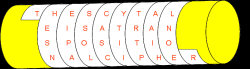

What is Cryptography?
Cryptography is the science of secure communications, formed from the Greek words kryptós meaning "hidden" and lógos, meaning "word." The first recorded use of cryptography was by the Spartans who as early as 400 BC employed a cipher device called a scytale to send secret communications between military commanders. The scytale consisted of a tapered baton around which was wrapped a piece of parchment inscribed with the message. Once unwrapped the parchment appeared to contain an incomprehensible set of letters; however when wrapped around another baton of identical size the original text appears. 
Cryptographers developed more and more ingenious systems, but it was in the 20 th Century that the science of cryptography took off. The first major achievement was the development of rotor cipher machines. An American, Edward Hebern recognized that by hardwiring alphabetic substitution in the connections from one side of an electrical rotor to those on the other side and cascading a collection of such rotors, alphabetic substitutions of almost any complexity could be produced. German engineers independently discovered the rotor concept and designed the precursors to the most famous cipher machine in history – the German Enigma Machine which was used during World War II. The cracking of the Enigma ciphers by British and Polish cryptanalysts is one of the greatest triumphs in the history of cryptography and played an important role in the Allied victory.